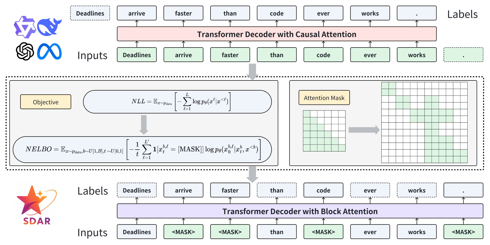
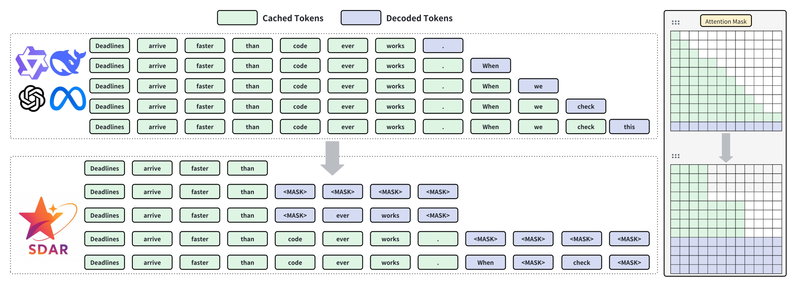
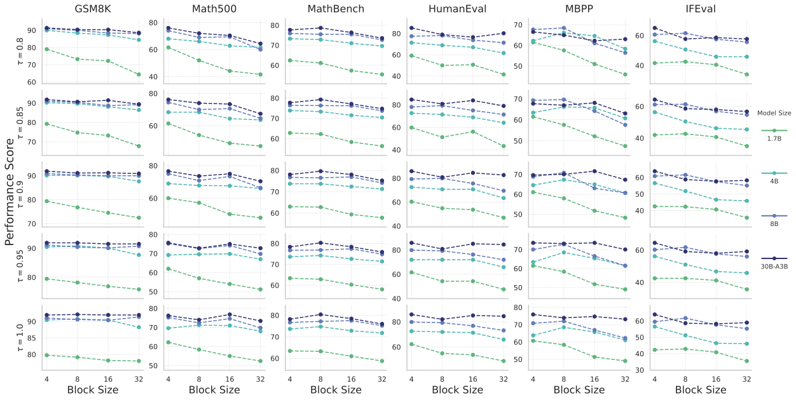
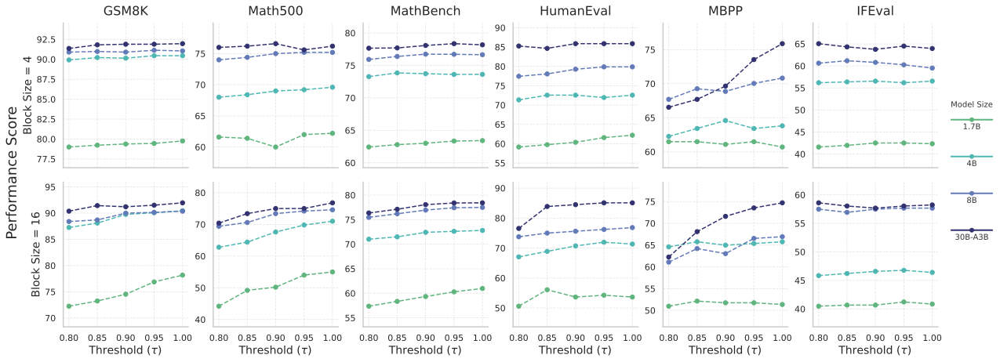
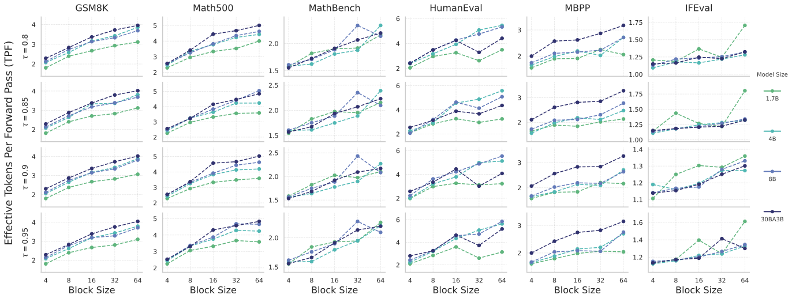
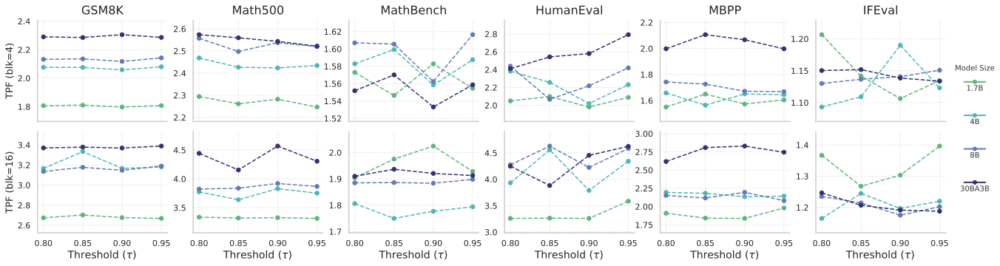
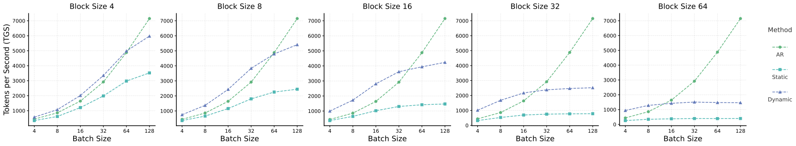
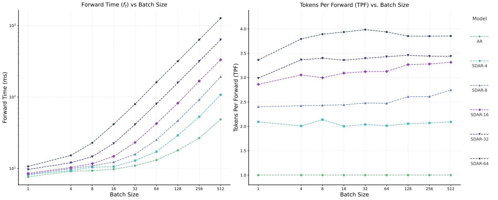

SDAR：让自回归与扩散协同工作的可扩展序列生成范式
SDAR: A Synergistic Diffusion-AutoRegression Paradigm for Scalable Sequence Generation
GitHub star 为 2026-10-20 的快照。阅读状态、进度与收藏只保存在你的浏览器里。
逐节精读
这部分按论文的章节顺序，用本站自己的话把整篇论文从头讲一遍。读懂某个概念需要的背景知识，会在第一次用到它之前单独讲清楚（青色框）。每个结论都尽量说出“因为什么、所以什么”。本页读的是 arXiv 第 3 版（2025-10-18，40 页的技术报告；第 3 版相比前两版新增了 §5.2.4 的真实推理引擎测速），后来的 ACL 2026 Findings 版本在“后来怎么样了”里单独交代。论文以 CC BY 4.0 许可发布，所以原文的图 1–8 直接放在讲到它的地方；原图没有画到的东西（训练时的注意力掩码、一个块怎样一步步填满、速度账怎么算、各表数字的对比）用本站自己画的示意图和图表补上。标“推算”的数字是本站根据论文数据算出来的；标“读自原图数据”的数字是本站从原文 SVG 图的矢量坐标里读出来的，不是论文正文里的原话。每节末尾有英文原文的链接。
0 导读：这篇论文解决什么问题
今天的大语言模型几乎都是自回归（autoregressive，AR）模型：从左到右，一次只生成一个 token，每生成一个就要把整个网络算一遍。它的训练极其成熟、高效，但解码天生是串行的。扩散语言模型换了一种生成方式：先放一段被遮住的“空白”，再反复地“猜一遍、定下有把握的几个”，一次前向可以同时定好几个 token，所以有并行解码的潜力。问题在于，从零训练扩散语言模型比训练同等的 AR 模型贵得多，而且全序列的双向注意力让 AR 推理里最重要的 KV 缓存失效。
块扩散（block diffusion）是两者之间的折中：把序列切成长度为 \(B\) 的块，块与块之间仍然从左到右，块内部用扩散的方式并行去噪。这样前面已经写完的块可以像 AR 一样缓存，当前块又能一次定好几个 token。SDAR 是上海人工智能实验室等单位的技术报告，它的核心主张只有一句话：不要从零训练块扩散模型，而是拿一个训练好的 AR 模型，用一小段继续训练把它“转”成块扩散模型。具体做法是把注意力掩码改成块因果、把训练目标从逐 token 交叉熵换成块内的掩码扩散目标，不需要额外的技巧。作者在 Qwen3 的 1.7B、4B、8B 稠密模型和 30B-A3B 混合专家（MoE）模型上都做了转换，每个模型只用 50B token 继续预训练和 4B token 指令微调。
报告的主要结果有四组。第一，在一个 2B 规模的受控实验里，同样的数据和算力下 AR 模型明显强于掩码扩散模型，而 AR 转出来的块扩散模型基本保住了 AR 的分数。第二，在 Qwen3 系列上，转换后的 SDAR-Chat 与走同样流程的 AR-Chat 平均分相差不到 1 分。第三，大模型能承受更大的块和更宽松的并行阈值；在单张 H200 上的真实推理引擎里，小 batch 时 SDAR-8B 的吞吐最高约为 AR 的 2.3 倍，但 batch 一大，优势就消失，batch 128 时 AR 反超。第四，在一个科学推理版的 30B MoE 模型上，SDAR 在 GPQA 和 ChemBench 上高于同流程的 AR 对照，但在 LiveCodeBench-v5 上低了 10.8 分。
读完这部分，你应该能回答这几个问题：
- 为什么 AR 训练比掩码扩散训练省算力？为什么 AR 解码在小 batch 时“浪费”了 GPU？
- 块扩散的似然怎么写，为什么块长为 1 时它就是 AR？
- SDAR 改了 AR 模型的哪些地方，没改哪些地方？训练时的输入为什么是两倍长？
- 推理时一个块怎样一步步填满？静态和动态两种解码各要几次前向？为什么每块还要多一次前向？
- 块长、阈值和模型大小怎样共同决定质量与速度？“每次前向的 token 数”（TPF）和真实速度差在哪里？
- 每组数字和谁比、在什么条件下比？哪些比较是对齐的，哪些不是？
- 它和同期的 Fast-dLLM v2、Dream、LLaDA2.0 有什么不同？
1 引言：AR 训得好但解得慢，扩散能并行却训得贵
AR 模型每生成一个 token，都要把全部参数从显存读到计算单元一次。生成阶段每次前向只处理一个新位置，计算量很小，时间主要花在“读参数”和“读 KV 缓存”上，这叫访存受限（详见本站 vLLM 精读）。一个直接的推论是：如果一次前向同时处理 16 个位置而不是 1 个，读参数的开销几乎不变，所以这次前向几乎不会变慢。
这篇论文自己的测量正好可以说明这一点。原文图 8 给出了单张 H200 上 8B 模型一次前向的耗时：batch 为 1 时，AR 每次前向处理 1 个位置，约 7.6 毫秒；块长 16 的 SDAR 每次前向处理 16 个位置，约 8.5 毫秒（读自原图数据）。处理的位置多了 15 倍，时间只多了约 12%（推算）。这多出来的“几乎免费的位置”，就是并行解码能提速的根本来源。反过来，当 batch 很大、GPU 的算力已经被占满时，每多处理一个位置都要实打实地花时间，这份“免费”就没有了。第 5.2 节会看到，SDAR 的速度优势恰好随 batch 增大而消失。
掩码扩散语言模型（masked diffusion language model）的训练像做完形填空：拿一段完整文字，随机抽一个遮挡比例 \(t\)（0 到 1 之间均匀抽取），把每个 token 以概率 \(t\) 换成特殊符号 [MASK]（本页简写为 [M]），让模型根据没被遮住的部分把被遮住的 token 猜回来。因为要同时用左右两边的上下文，它的注意力是双向的。生成时，从一整段 [M] 开始，每一步让模型对所有被遮住的位置给出猜测和置信度，把最有把握的几个定下来，其余继续遮着，直到全部填满。原理的推导见本站 MDLM 精读，第一个做到 8B 规模的模型见 LLaDA 精读。
作者认为 AR 模型有两个局限。一是逐个生成造成的推理瓶颈：生成 \(L\) 个 token 就要串行地前向 \(L\) 次，规模越大，延迟和服务成本越高。二是严格的从左到右偏置未必适合所有任务。作者特别举了科学领域的例子：识别化学官能团、DNA 序列或分子式时，一个位置该写什么往往同时取决于它两侧的内容，双向注意力会更自然。
掩码扩散模型没有这两个限制，但它有两个自己的难题。第一是训练效率低。它优化的不是精确的负对数似然，而是一个上界（负证据下界，NELBO，第 2 节解释）；而且每个训练样本里只有被遮住的那部分 token 产生损失，其余 token 只当上下文。作者引用的以往研究和他们自己的实验都显示，同样的算力下它明显不如直接优化似然的 AR 模型。第二是推理代价高。全序列双向注意力意味着画布上任何一个位置变了，所有位置在每一层的 key、value 都要重算，所以不能用 KV 缓存。如果为了质量每步只定一个 token，生成长度为 \(N\) 的序列就要 \(N\) 步，每步都对长度 \(N\) 的整段做注意力（代价约 \(N^2\)），合起来是论文说的 \(O(N^3)\)。近似的 KV 缓存（例如本站 Fast-dLLM 精读 讲的 DualCache）能缓解，但作者认为它是否会损害其他能力还不清楚。
块扩散是两者之间的一类混合模型（代表作见本站 BD3-LM 精读）。它在全局上保留从左到右的结构，作者借 DiffuCoder 的说法称之为“全局 AR 性”；这让已完成的块可以缓存、生成长度可以不固定，同时块内的并行又放松了逐 token 的因果约束。但它的训练同样昂贵：扩散目标本来就收敛慢，块扩散的训练还要把加噪序列和干净序列拼在一起喂给模型（第 3 节解释），每个样本的计算量接近翻倍。
SDAR 的出发点是把训练和推理解耦：训练的大头交给最成熟、最省算力的 AR 预训练；然后加一段很短的“适应”训练，让模型学会块扩散式的解码。这样既保留了 AR 的 KV 缓存、变长生成和稳定的优化，又获得了块内并行的能力。
论文列出的贡献可以概括为五条：
- AR 与掩码扩散训练效率的公平比较：同数据、同结构、各用推荐超参，从零训两个 2B 模型（第 4 节）。
- 从 AR 底座和从掩码扩散底座分别转块扩散：用 1T 语料中的 100B 子集做转换，比较哪个底座更好（第 4 节）。
- 放大实验与转换配方：把开源 AR 模型（稠密和 MoE）用 50B 开源数据转换；作者强调不需要原始预训练数据，数据量也远少于 Dream 的做法（第 5.1 节）。
- 模型大小、块长、下游表现与推理速度之间关系的系统分析：1.7B 到 30B、块长 4 到 64（第 5.2 节）。
- 开源：全部尺寸、全部块长的模型，一个面向研究的轻量推理引擎 JetEngine，以及基于 LMDeploy 的生产级实现；还有一个科学推理模型 SDAR-30B-A3B-Sci，作者称它是第一个能生成长思维链的扩散模型（第 6 节）。
2 预备知识：同一句话的三种拆法
记号。词表记作 \(\mathcal V\)，长度为 \(L\) 的序列记作 \(x=(x^1,\dots,x^L)\)。本页统一用 \(B\) 表示块长（每块有几个 token），\(K=L/B\) 表示块数，\(x^{(k)}\) 表示第 \(k\) 块。
2.1 自回归：把联合概率拆成一串条件概率
每一项都是“已知前文，下一个 token 是谁”的概率。训练时对所有位置同时算交叉熵，得到的就是精确的负对数似然（NLL），而且序列里每一个 token 都贡献梯度。代价是生成时第 \(\ell\) 个 token 必须等前面全部生成完，生成 \(L\) 个 token 需要 \(L\) 次串行前向。
2.2 掩码扩散：随机遮住，再猜回来
前向（加噪）过程对每个 token 独立进行：以概率 \(1-t\) 保持原样，以概率 \(t\) 变成 [M]。论文用线性调度 \(\alpha_t=1-t\)，\(\alpha_t\) 就是“还保留原样”的概率：
这里 \(\mathbf{x}_0^{\ell}\) 是原 token 的独热向量，\(\mathbf m\) 是 [M] 的独热向量，Cat 表示按括号里的概率抽一个类别。模型学的是反过来的事：看着遮了一部分的 \(x_t\)，把被遮的 token 猜回来。训练目标化简后是一个加权的交叉熵：
示性函数 \(\mathbf 1[\cdot]\) 保证只有被遮住的位置算损失。权重 \(1/t\) 的作用可以这样理解：遮挡比例 \(t\) 很小时，一个序列里只有很少几个位置被遮，每个位置的损失要放大，才能和遮得多时的总量相当。整个式子是负对数似然的一个上界（即 NELBO），所以优化它并不等于直接优化似然。
2.3 块扩散：块间自回归，块内扩散
块扩散先在块的层面用 AR 的拆法：
再把每一块的条件概率 \(p_\theta(x^{(k)}\mid x^{(<k)})\) 交给一个块内的掩码扩散过程。于是训练目标是各块的条件 NELBO：
注意条件里的两部分：当前块的加噪版本 \(x_t^{(k)}\)，以及前面所有块的干净版本 \(x_0^{(<k)}\)。模型学的是“前文都已写好，在这一块里填空”。
两个端点（本站推导）。块长 \(B=L\) 时只有一块，上式退化为 2.2 节的全序列掩码扩散。块长 \(B=1\) 时每块只有一个 token：这个 token 以概率 \(t\) 被遮，被遮时它能看到的只有前文 \(x^{<\ell}\)，于是
也就是说，\(B=1\) 的块扩散目标恰好等于 AR 的交叉熵，上界变成了等式。块长在 1 和 \(L\) 之间时，模型就在“精确但串行”的 AR 和“并行但只有上界”的全序列扩散之间插值。这正是 SDAR 敢从 AR 模型出发的数学理由：AR 模型本来就是 \(B=1\) 的块扩散模型，把块长从 1 放大到 4 或 16，是一次“局部”的改动。
3 方法：改掩码、换目标，然后按块解码
3.1 训练：从 AR 检查点继续训练，不加 shift 也不做退火
SDAR 的训练分两段。第一段是普通的 AR 预训练，得到参数 \(\theta_{\text{AR}}\)；在放大实验里这一步直接用现成的 Qwen3 Base 模型。第二段是“范式转换”：用 \(\theta_{\text{AR}}\) 初始化，把训练目标从 2.1 节的 NLL 换成 2.3 节的块条件 NELBO，同时把注意力掩码从因果改成块因果，继续训练一小段。转换之后，再做一段标准的指令微调（SFT）。网络结构本身一点不改。

加噪怎么做。按 2.2 节的方式随机遮挡 token。继续预训练阶段整条序列都可以被遮；SFT 阶段只遮回答部分，提示词保持干净。序列按长度 \(B\) 切成 \(K\) 块。
一次前向怎么同时训练所有块。块条件目标要求第 \(k\) 块的加噪版本能看到前面各块的干净版本。如果一块一块地单独前向，代价太高。SDAR 沿用 BD3-LM 的做法：把加噪序列 \(x_t\) 和干净序列 \(x_0\) 首尾拼成一条长 \(2L\) 的输入，再用一张特制的注意力掩码规定谁能看谁。干净流内部是块因果的（第 \(k\) 块能看第 1 到第 \(k\) 块），加噪流的第 \(k\) 块能看自己（块内双向）以及干净流中第 1 到第 \(k-1\) 块。这样一次前向就让每一块都在“前文干净”的条件下练习去噪。下图把这张掩码画成 12×12 的小例子。
代价。输入长度翻倍，意味着每个样本的计算量接近翻倍。附录 A 给出了实际数字：按“每张 GPU 每秒处理的 token 数”算，SDAR 训练的原始吞吐与普通 AR 训练相当；但因为每个样本要同时处理干净和加噪两个版本，有效训练速度大约是 AR 的一半。所以 SDAR 省的不是“每个 token 的训练成本”，而是“需要的 token 数”：转换只用 30B 到 50B token，而预训练动辄数万亿。
logits shift（输出错位）：AR 模型的输出头在位置 \(i\) 预测的是位置 \(i+1\) 的 token。如果改成扩散模型后让位置 \(i\) 预测它自己，输出头的用法就变了。Dream 等工作因此保留错位：被遮住的位置 \(i\) 由位置 \(i-1\) 的输出来预测，尽量贴近原来的 AR 习惯。
注意力掩码退火：DiffuLLaMA 等工作在转换初期仍用因果掩码，再逐步把它放开成全双向，避免模型一下子看到“未来”而崩掉已有的表征。
SDAR 两样都不用。它直接让位置 \(i\) 预测自己（图 1 下半部分的对齐标签），也不做掩码退火。论文的致谢里提到，这个“可以不用 shift 和退火”的建议来自 LLaDA 作者 Shen Nie。一个合理的解释是：块扩散只在长度 \(B\) 的小窗口里放开双向注意力，块与块之间仍是因果的，对 AR 模型来说改动是局部的，没必要再加缓冲。论文说，正因为 AR 初始化提供了很强的起点，转换在 30B 到 50B token 上就能收敛，并称这一步“解锁”了模型在局部块内做非因果推理的能力。
工程实现（附录 A）。块因果的双流掩码和只在 [M] 位置算的损失，用不了标准的 FlashAttention 和 Liger-Kernel 的融合交叉熵。作者改用 PyTorch 的 FlexAttention 处理结构化掩码，并写了一个 Triton 融合算子来算损失，避免把整个 logits 张量（序列长度 × 词表大小）放进显存。作者说内部使用的工业级训练框架没有完全开源；按官方 README，2025-10-29 开源了一个基于 LlamaFactory 的下游微调框架。
- 论文式 (7) 把转换目标写成 \(\mathbb E\big[\log P(b_k^0\mid b_k^t,b_{<k})\big]\)，既没有负号也没有 \(1/t\) 权重，与式 (5) 不一致。按文字描述（“优化块条件 ELBO”），应以式 (5) 为准，本页 2.3 节的写法就是式 (5)。
- “不用 shift、不做退火”是一个设计选择，论文没有给出“加 shift / 加退火”的对照实验，所以它只说明这样做可行，没有说明这样做更好。与之相对，Fast-dLLM v2 保留了 token shift（第 7 节对照）。
- 原始 AR 模型训练时从来没有用过 [M]。官方推理示例把 mask_token_id 设为 151669，即专门指定一个 token 充当掩码，它的含义完全是在转换训练中学出来的。
3.2 推理：块与块之间自回归，块内迭代去噪

推理是分层的。给定提示词，模型按顺序生成第 1、2、…、K 块，每一块都以“提示词 + 已经生成的所有块”为条件。生成一块时，先放 \(B\) 个 [M]，然后迭代去噪：每一步把当前块和前文一起送进模型，得到每个被遮位置的预测分布；从中挑出一部分位置，用常规方式（贪心或核采样）定下 token，其余位置继续遮着，进入下一步；直到这一块全部填满，再开始下一块。
每一步挑哪些位置，论文给了两种“低置信度重遮”策略。这里的置信度指模型给最可能那个 token 的概率：
- 静态：块长 \(B\)、总步数 \(T\) 时，每步定下置信度最高的 \(\lceil B/T\rceil\) 个位置。每块的前向次数固定为 \(T\)，简单可预测。论文主表都用 \(T=B\)，也就是每步只定 1 个 token。
- 动态：每步定下所有置信度超过阈值 \(\tau\) 的位置；如果一个都不够，就至少按置信度定下 1 个（或 \(\lceil B/T\rceil\) 个），保证进度。容易的部分一步就能定好几个，难的部分慢慢来，平均前向次数因此减少。
为什么每块还要多一次前向。块内注意力是双向的，一个位置在每一层的 key、value 取决于同一块里其他位置当前是什么。块还没填完时，那些位置还有 [M]，填上以后它们会变，所以当前块的 KV 在去噪过程中一直不稳定，不能写进缓存（这就是图 2 图注的意思）。只有整块定稿以后，它的 KV 才固定下来。§5.2.4 说明，作者的推理引擎在每块定稿后专门再做一次前向，把这一块的 KV 写进缓存，所以每块的前向次数是“去噪步数 + 1”。作者把“把这次写缓存合并进下一块的第一步去噪”列为以后的优化方向。
下面这个小演示用一个已知联合分布的玩具例子，让你亲手比较不同块长和阈值下的并行解码：可以看到，块越大、一次定的 token 越多，前向次数越少，但把两个相互关联的位置同时独立地定下来，出错（拼出“New Diego”这种词）的概率也越高。
4 受控实验：该从 AR 转，还是从掩码扩散转
AR 训练时，一个长度 \(L\) 的样本里每个位置都有一个“预测下一个 token”的任务，\(L\) 个位置全部产生梯度。掩码扩散训练时，只有被遮住的位置产生梯度；遮挡比例 \(t\) 在 0 到 1 之间均匀抽取，平均只遮一半（推算：\(\mathbb E[t]=1/2\)），另一半只当上下文。再加上它优化的是似然的上界而不是似然本身，同样多的数据和算力，掩码扩散的学习效率就更低。作者在相关工作里引用了 Nie 等人（2024）的测量：掩码扩散模型要达到与 AR 相同的验证集 NLL，最多需要约 16 倍的计算量。
4.1 实验怎么设计
作者从零预训练两个 2B 参数的模型：一个 AR（变长因果注意力），一个掩码扩散（全双向注意力），用同一份 1T token 语料（通用网页、STEM 和代码）、同样的结构、分词器、优化器和 4096 的上下文长度（序列打包）。然后各做一段 100B token 的退火训练，分成四路：
- AR-2B-Base：AR 模型继续用 AR 目标训练。
- SDAR-2B-Base（表里写作 AR-BD）：AR 模型在这 100B token 上转换成块扩散，块长 16。
- MDLM-2B-Base：掩码扩散模型继续用自己的目标训练。
- MDLM-BD-2B-Base：掩码扩散模型在这 100B token 上转换成块扩散，块长 16。
四个 Base 模型再用同一份 4B token 的指令数据做 SFT（各自沿用退火阶段的训练方式），得到四个 Chat 模型。评测覆盖推理与知识（BBH 3-shot、MMLU 5-shot、GPQA-Diamond 0-shot）、数学（MATH 4-shot 思维链、GSM8K 4-shot 思维链）和代码（HumanEval 0-shot、MBPP 3-shot）。解码方式各按其架构：AR 用贪心；两个块扩散模型用块长 16、16 步的静态低置信度解码（每步定 1 个 token）；纯掩码扩散模型按 LLaDA 论文的半自回归低置信度重遮协议，超参照原论文设置。
4.2 结果：AR 强于掩码扩散，转换保住了 AR 的分数
| 2B Chat 模型 | BBH | MMLU | MATH | GSM8K | HumanEval | MBPP | GPQA | 七项平均（推算） |
|---|---|---|---|---|---|---|---|---|
| AR-2B | 35.7 | 48.7 | 29.9 | 61.8 | 42.1 | 44.4 | 26.3 | 41.3 |
| MDLM-2B | 32.2 | 47.0 | 12.6 | 57.9 | 21.3 | 27.2 | 26.3 | 32.1 |
| SDAR-2B（AR→块扩散，B = 16） | 35.9 | 50.9 | 26.8 | 59.4 | 40.0 | 42.9 | 28.2 | 40.6 |
| MDLM→块扩散（B = 16） | 32.9 | 47.5 | 23.3 | 64.7 | 39.0 | 33.5 | 29.8 | 38.7 |
数字来自原文表 1；最后一列是本站把七项等权平均的推算。
作者从表 1 读出三点。第一，AR 明显强于掩码扩散。同样的训练量下，AR-2B 几乎在所有基准上都高于 MDLM-2B，差距最大的是数学和代码：MATH 29.9 对 12.6，HumanEval 42.1 对 21.3。作者把这归因于前面讲的训练效率差异。第二，转换基本保住了 AR 的能力。SDAR-2B 与 AR-2B 大体持平，在 MMLU（+2.2）和 GPQA（+1.9）上略高，在 MATH（−3.1）和 HumanEval（−2.1）上略低；七项平均只差 0.7 分（推算）。第三，掩码扩散模型转块扩散也大有好处，但追不上 AR 底座。MDLM-BD 的 MATH 从 12.6 涨到 23.3，几乎翻倍；但在多数基准上仍落后于 SDAR。作者的结论是：AR 是块扩散更好的起点。
4.3 结果的份量
- 对齐了什么。这是全文对齐得最好的一组比较：参数量、预训练语料与 token 数、结构、分词器、退火数据量（100B）和 SFT 数据（4B）都相同，差别只在训练目标和注意力掩码。这让“AR 底座优于掩码扩散底座”的结论比较可信。
- 算力并不完全相同。附录 A 说块扩散训练的有效速度约为 AR 的一半（因为要同时处理干净和加噪两个版本），所以在 100B token 的退火阶段，两个块扩散变体实际花的计算量大约是 AR 的两倍（本站据附录 A 推论）。“同 token 数”不等于“同 FLOPs”。
- 没有任何并行加速。块扩散两行用的是块长 16、16 步的静态解码，每次前向只定 1 个 token。所以这张表说明的是“转换后的模型在最保守的解码下质量如何”，不是“并行解码时质量如何”。
- 规模和统计量。只有一个规模、一次训练，没有报告方差。GPQA-Diamond 只有 198 道题，1.9 分大约是 4 道题（推算）；BBH、MMLU 的小差距也都在单次评测的波动范围内。
- 结论并非处处成立。MDLM-BD 在 GSM8K（64.7 对 61.8）和 GPQA（29.8 对 26.3）上反而高于 AR-2B。纯掩码扩散模型按 LLaDA 协议解码，用了多少步论文没写。
- “训练效率”只在一个预算点上看。§4 的文字说 AR 的训练损失“一致更低”，但论文没有给出损失曲线或“算力—损失”曲线，所以“AR 更省算力”在这里是一个预算点上的下游分数比较，而不是缩放律意义上的结论；后者要看作者引用的 Nie 等（2024）。
- 2B 还是 1.7B。§4.1 说受控模型是 2B，§5 的开头又说那是“在 1T token 上训练的 1.7B 模型”。两处说的应是同一组模型，本页按 §4.1 写作 2B。
5.1 放大到 Qwen3：1.7B 到 30B-A3B，50B token 的转换
Base 模型是只做过预训练的模型，会续写文字但不太会按指令回答；Chat 模型是在 Base 上再做指令微调（SFT）后的版本。本节所有比较都在 Chat 模型之间进行。
混合专家（MoE）：把 Transformer 每层的前馈网络换成很多个并列的“专家”小网络，每个 token 只被路由到其中少数几个。这样总参数可以很大，而每个 token 实际参与计算的参数（激活参数）很少。Qwen3-30B-A3B 的名字就是“总参数约 30B，每个 token 激活约 3B”的意思。MoE 的原理和路由细节见本站 DeepSeek-V3 精读。SDAR 的转换只改注意力掩码和损失，不碰前馈层，所以对 MoE 和稠密模型的做法完全一样。
5.1.1 实验怎么设计
底座是 Qwen3-1.7B、4B、8B 和 30B-A3B 的 Base 模型。训练分两段：
- 继续预训练（CPT）：从第 4 节那份 1T token 语料里随机抽 50B token，上下文 4096、序列打包，用块扩散目标训练。
- 指令微调（SFT）：在一份 4B token 的高质量指令数据上微调，得到 SDAR-Chat 系列。
为了有一个公平的 AR 对照，作者对同样四个 Qwen3 Base 模型走完全相同的 CPT 和 SFT 流程，只是目标仍是 AR 的下一个 token 预测，得到 AR-Chat 系列。官方 README 补充了一个论文正文没有写明的细节：默认模型从头到尾都用块长 4；块长 8、16、32、64 的版本是在 CPT 阶段仍用块长 4、到 SFT 阶段才直接把块长改成目标值训练出来的。这与论文贡献里“只需少量额外 SFT 就能把块长放大”的说法一致。
评测共 18 个基准，分四类：推理与知识（ARC-C、TriviaQA 1-shot、MMLU 5-shot、MMLU-Pro 思维链、GPQA-Diamond、IFEval），数学（GSM8K、MATH-500、MathBench、AIME-2024、AIME-2025、LiveMathBench-Hard，均为 0-shot 思维链），代码（HumanEval、HumanEval-X、MBPP、LiveCodeBench v6，均为 0-shot），多语言（MMMLU-lite、CMMLU）。解码方式：SDAR-Chat 用贪心的静态解码，块长和去噪步数都是 4（即每步定 1 个 token）；所有 AR 模型用标准贪心解码。
5.1.2 结果：与同流程的 AR 模型基本持平
| 模型 | MMLU | GSM8K | Math500 | HumanEval | MBPP | IFEval | LCB-v6 | 18 项平均（推算） |
|---|---|---|---|---|---|---|---|---|
| AR-Chat 1.7B | 63.8 | 81.1 | 62.0 | 65.9 | 61.9 | 43.3 | 8.6 | 44.7 |
| SDAR-1.7B-Chat | 62.9 | 80.1 | 63.2 | 61.6 | 61.1 | 43.4 | 5.7 | 44.5 |
| AR-Chat 4B | 74.8 | 90.7 | 74.1 | 73.4 | 67.1 | 58.4 | 10.3 | 53.2 |
| SDAR-4B-Chat | 74.9 | 89.9 | 72.8 | 72.8 | 65.4 | 56.6 | 13.1 | 53.4 |
| AR-Chat 8B | 77.5 | 92.8 | 78.4 | 80.7 | 75.1 | 60.8 | 20.5 | 57.8 |
| SDAR-8B-Chat | 78.6 | 91.3 | 78.6 | 78.7 | 72.0 | 61.4 | 16.6 | 57.6 |
| AR-Chat 30B-A3B | 82.2 | 92.7 | 76.8 | 84.8 | 75.1 | 57.7 | 23.4 | 59.6 |
| SDAR-30B-A3B-Chat | 82.8 | 91.4 | 77.8 | 87.2 | 71.6 | 60.6 | 21.7 | 60.3 |
数字来自原文表 2（节选 7 项）；最后一列是本站对表 2 全部 18 项等权平均的推算。AR-Chat 即表中的 Qwen3-xB†，指“从 Qwen3 Base 走同样 CPT 与 SFT 得到的 AR 模型”，不是 Qwen 官方发布的 Chat 模型。
表 2 的主要信息是“没有掉点”：四个规模上，SDAR 与 AR-Chat 的 18 项平均分之差分别是 −0.2、+0.1、−0.2、+0.7（推算）。随着规模从 1.7B 到 30B，SDAR 的分数和 AR 一样稳定上升，例如 MMLU 从 62.9 升到 82.8。作者强调 30B 上的几个亮点：HumanEval +2.4、HumanEval-X +2.8、IFEval +2.9，并据此说块式结构可能更有利于结构化生成和对齐。
表 3 把 SDAR 放到更大的背景里：SDAR-8B 的 MMLU 是 78.6，而 LLaDA-8B 是 65.9、Dream-7B 是 69.5（后两者引自各自的论文）；原始的 Qwen3-1.7B-Base 和 Qwen3-30B-A3B-Base 引自 Qwen3 技术报告。作者据此说 SDAR 是第一次让非自回归生成真正接近顶级 AR 模型。
5.1.3 转换要多少数据
作者把 SDAR 的转换成本和两个“AR 转扩散”的前作对比：DiffuLLaMA 用了 65B token，Dream 7B 用了 580B token，而且两者相对各自的 AR 底座（LLaMA 和 Qwen2.5）都有明显退步；SDAR 只用 50B token 继续预训练。官方 README 把 50B 折算为 Qwen3 预训练量的约 0.14%（Qwen3 技术报告称其预训练用了约 36T token）。作者的解释是，AR 预训练已经提供了稠密的监督，块扩散只需要一段很短的训练来对齐目标。
作者还试过更小的转换预算：20B、30B、40B token。这些设置下得到的模型也能用，但下游分数略低，而且之后在 SFT 阶段放大块长的余地更小；作者说即便如此，退步也远小于以往的扩散转换。他们还指出，转换用的是质量相对较低的开源语料，而 Qwen3 预训练最后阶段用的是 6T 高质量合成数据；如果转换数据的质量和分布更接近，预算可能还能更小。不过这几个更小预算的具体分数，论文没有给出。
5.1.4 结果的份量
- 和 AR 比，对齐了什么。AR-Chat 与 SDAR-Chat 用同一个 Qwen3 Base、同样的 50B CPT 数据和 4B SFT 数据，解码都是贪心。这是一组对齐得很好的比较，“转换没有掉点”的结论站得住。唯一的不对称是计算量：SDAR 的 CPT 每个样本要处理两倍长的输入（第 3.1 节），所以同样 50B token 花的算力约为 AR 的两倍（推论）。
- 持平是在没有加速的条件下测的。SDAR 用的是块长 4、4 步的静态解码，每次前向只定 1 个 token，再加上每块写 KV 的一次前向，前向次数还比 AR 多四分之一（推算：5 次换 4 个 token）。所以表 2 证明的是“转换后的模型保住了能力”，不是“能在加速的同时保住能力”；后者只有第 5.2 节图 3、图 4 里 6 个基准的数据。
- 表 2 有两处差值写错了。按表中的分数本身计算：1.7B 的 AIME-25 是 2.1 对 3.3，差 −1.2，表中写作 −5.9；30B 的 MBPP 是 71.6 对 75.1，差 −3.5，表中写作 +3.5（项目页上同一数字写的是 −3.5）。因此正文“30B 上 18 项里有 11 项持平或超过 AR”实际应为 10 项（推算：SDAR ≥ AR 的项数，1.7B / 4B / 8B / 30B 依次为 7 / 8 / 12 / 10 项）。另外 SDAR-4B 的 HumanEval 在表 2 是 72.8，在表 3 是 72.0。
- 小分数的基准波动很大。AIME 每年只有 30 道题，一道题就是 3.3 分；表 2 里小模型的 AIME 多在 10 分上下，也就是只答对 3 道左右，±2.9 这样的差值相当于一道题。LiveMathBench-Hard 上 SDAR 在每个规模都更低（8B 低 6.8 分），LCB-v6 上 8B 低 3.9 分，这些是平均分掩盖掉的退步。
- 和 LLaDA、Dream、Qwen3-Base 的比较没有对齐。表 3 里这些数字是从别的论文直接抄来的，评测协议（few-shot 设置、Base 还是 Instruct、生成长度）各不相同；而且 SDAR 站在 Qwen3 约 36T token 的预训练上，LLaDA-8B 是从零训练的（2.3T token，见本站 LLaDA 精读）。所以 “78.6 对 65.9” 主要说明了底座的差距，而不是范式的差距。
- 和 Dream 的数据量比较，目标并不一样。Dream 要把模型改成全序列双向注意力，SDAR 只在长度 4 的块内放开双向，改动小得多。580B 对 50B 的差距，有一部分来自“改得多与改得少”，不能全部算作配方效率。
英文原文 §5.1 ↗ · 表 2 ↗ · 表 3 ↗
5.2 块长、阈值、模型大小与速度：并行到底能换来多少
5.2.1 实验设计与 TPF 指标
作者同时改变三个因素：模型大小（1.7B、4B、8B、30B-A3B 四个 SDAR-Chat 模型）、块长（4 到 64，每个块长是单独微调出来的模型）、解码方式（静态，每块 \(B\) 步；动态，阈值 \(\tau\in\{0.80,0.85,0.90,0.95\}\)）。质量用第 5.1 节的基准衡量；效率用“每次前向的有效 token 数”：
标准 AR 解码的 TPF 恒为 1，所以 TPF 可以看作与硬件无关的“算法加速比”。后面会看到，它和真实速度之间还隔着两样东西：每块写 KV 的那次额外前向，以及每次前向处理 \(B\) 个位置带来的额外耗时。
5.2.2 质量：大模型更能承受大块和松阈值

作者从图 3 和图 4 读出三点。第一，规模与并行的“良性循环”：1.7B 和 4B 在块长大于 4 时明显掉点，8B 和 30B-A3B 在很宽的块长范围内都很稳定。以 Math500、\(\tau=0.9\) 为例，块长从 4 到 32，1.7B 从约 60.0 降到 48.0，8B 从约 75.0 降到 66.4，30B 从约 76.6 降到 70.4（读自原图数据）。能力更强的模型能用更大的块，也就能并行得更多。第二，块长与质量不是单调关系：块长 4 几乎和 AR 没有区别，块长 32 常常要付出与任务有关的代价，但中等块长（8、16）在 GSM8K、MathBench、HumanEval 上有时反而比块长 4 更好，作者推测适度更大的生成窗口有时是一种有益的归纳偏置。

第三，阈值越接近 1 质量越好，而大模型对宽松阈值更不敏感：30B-A3B 在 \(\tau\ge0.90\) 时几乎在所有任务和块长上都接近饱和。作者把 MBPP 对阈值特别敏感解释为：MBPP 原本是给 Base 模型设计的评测，经过 SFT 的模型不太适合它，所以分数波动大。
5.2.3 效率：块越大、模型越大，TPF 越高

图 5 给出了两个趋势。一是 TPF 随块长可预测地上升：在所有模型、任务和阈值下，块长都是提高吞吐的可靠杠杆。以 Math500、\(\tau=0.9\) 为例，8B 的 TPF 从块长 4 的 2.54 升到块长 64 的 4.63，30B 从 2.54 升到 5.03（读自原图数据）；ACL 版摘要里“理论加速超过 5 倍”说的就是这类最好情况。二是大模型的 TPF 更高。作者的解释是：能力更强的模型预测熵更低、置信度更高，同一个块里有更多位置越过阈值，于是一次定的 token 更多。由此他们提出一个推论：凡是能降低模型预测熵的技术，比如知识蒸馏或强化学习带来的“熵坍缩”，都可能直接转化为解码速度。
不同任务的 TPF 差别也很大。数学和代码这类格式固定、下一步很确定的文本，TPF 能到 4 以上；IFEval 这类开放式指令跟随，TPF 只有 1.1 到 1.4 左右，块内几乎还是一个一个地定。ACL 版补充说，1.7B 在 IFEval 上 TPF 偏高，是因为微调数据不匹配导致重复退化，模型的熵坍缩了，这个 TPF 是“虚高”的。

图 6 显示，TPF 和阈值的关系既不单调、也因任务而异。作者的解释是：解码是一个前后相继的过程，一块的质量会影响下一块。阈值太低时，可能接受一个低质量、高熵的块；这个错误会让后面的预测更不确定，置信度降低，结果每步能定的 token 反而变少。由此作者得出本节的核心论点：在 SDAR 里，质量和效率不是两条独立的轴；追求更高的质量（更严的阈值、更强的模型）反而能让解码一直保持在低熵、高置信的状态，从而更快。
- “错误传播导致后续块更不确定”是一个合理的解释，但论文没有直接测量后续块的熵或置信度来验证它；而且图 6 的很多起伏只有百分之几，单次评测的噪声也可能造成这种形状。
- 第 5 节开头说要“推导出一个可预测的缩放律”，但正文给出的是定性趋势和一组图，并没有拟合出公式。
- 图 3 中块长 4、静态解码（最下一行）的点与表 2 的同一配置不完全一致：例如 8B 的 Math500 在图 3 中约为 75.2，在表 2 中是 78.6；30B 约为 76.2 对 77.8（读自原图数据）。论文没有说明两处评测设置的差别。
5.2.4 在真实推理引擎上测速（第 3 版新增）
TPF 只数前向次数，不管每次前向花多长时间。作者因此在工业级推理引擎上做了实测，想回答两个问题：SDAR 在生产引擎上能达到多高的绝对吞吐？理论上的 TPF 能兑现成多少真实速度？
测量条件。LMDeploy 推理引擎，单张 NVIDIA H200 GPU；模型是 SDAR-8B-Chat，块长 4 到 64（每个块长一个模型）；动态解码一律用 \(\tau=0.9\)，作者说前面的分析表明这个阈值能保持与 AR 相当的质量；batch 从 4 扫到 512（图 7 画到 128，图 8 从 1 画到 512）；提示词来自 Math-500。指标是 TGS（tokens generated per second），即整个 batch 每秒合计生成的 token 数。对照是同一引擎上的 AR 解码。
速度账怎么算。记 \(t_f\) 为一次前向的耗时，\(\alpha\) 为 batch 大小，\(\beta\) 为块长，\(\gamma\) 为生成一块平均要几次去噪前向。AR 每次前向为每个请求生成 1 个 token；SDAR 生成一块（\(\beta\) 个 token）要 \(\gamma\) 次去噪，再加 1 次写 KV：
把动态 SDAR 和 AR 相除（本站整理），速度比可以拆成两个因子：
第一个因子总比 TPF 小，因为分母多了写 KV 的那次前向。第二个因子取决于硬件处在什么状态：batch 小、访存受限时，SDAR 每次前向多处理的 \(\beta\) 个位置几乎免费，这个因子接近 1；batch 大、算力受限时，SDAR 每次前向的计算量是 AR 的约 \(\beta\) 倍，这个因子会迅速变小。静态解码的第一个因子是 \(\beta/(\beta+1)<1\)，所以静态 SDAR 在任何 batch 下都不可能比 AR 快。

作者读出的结论是：动态解码下的峰值吞吐分别为 6600、5510、4236、2520、1509 tok/s（块长 4、8、16、32、64）；SDAR 在小 batch 时明显快于 AR，但优势随 batch 增大而消失。原因是 SDAR 每次前向的计算强度更高，更早进入算力受限状态；块越大，小 batch 时的加速越大，但越早撞上算力上限。作者据此认为，SDAR 最适合对延迟敏感、batch 小的场景，比如实时交互。

图 8 解释了图 7 的形状。左图说明前向耗时在 batch 较小时几乎不变，过了一个拐点后严格线性增长；拐点代表硬件能支持的最大有效并行度，块长越大拐点越靠前。右图说明 SDAR 的“每次前向定几个 token”在各种 batch 下都大致稳定，所以大 batch 时速度优势消失，不是因为模型突然定得少了，而纯粹是硬件算力到顶。作者据此提出三条改进方向：把写 KV 的那次前向合并进下一块的解码；为 SDAR 特有的计算模式写专门的算子，以扩大它占优势的 batch 范围；按负载特点在部署时选择块长。
把账算一遍（推算，耗时与 TPF 读自原文图 8 的矢量数据）。以块长 16、生成 16 个 token 为例：
把图 7、图 8 的全部数据按这种方法整理成一张图，就能一眼看出 SDAR 在哪个区间占优：
下面的屋顶线小工具可以帮助理解“为什么 batch 一大优势就没了”：选一个模型和一张 GPU，拖动 batch，可以看到解码一步从访存受限（时间主要花在读参数上）变成算力受限（时间与计算量成正比）。SDAR 每次前向要算 \(B\) 个位置，相当于把“有效 batch”放大了 \(B\) 倍，所以它更早走到右边的算力受限区。小工具里的 GPU 和模型是预设的几种常见配置，不是论文用的 H200 和 SDAR-8B，只用来建立直觉。
5.2.5 结果的份量
- 测量条件交代得比较完整。硬件（单张 H200）、引擎（LMDeploy）、模型（SDAR-8B-Chat）、阈值（0.9）、batch 范围（4 到 512）、数据集（Math-500）都写明了，而且 AR 对照跑在同一个引擎上，这比很多只和未优化的 Hugging Face 生成代码比较的扩散论文扎实。
- 但有几样没写。AR 对照用的是哪个模型（AR-8B-Chat 还是 Qwen3-8B）、生成长度上限、提示词长度、是否打开了前缀缓存，正文都没有交代。
- 2.3 倍只在小 batch 成立。按图 7、图 8 的数据，batch 4 时块长 16 和 32 约为 AR 的 2.3 倍；batch 32 时最好的只有约 1.3 倍；batch 64 时最好的也只与 AR 持平（块长 4 约 1.02 倍）；batch 128 时 AR 是块长 64 的约 5 倍（推算）。AR 的吞吐在 batch 512 时还能到约 10,500 tok/s（推算：512 ÷ 48.6 ms），而 SDAR 的最高峰值是块长 4 的 6600 tok/s。所以“峰值 6600”不应读成“比 AR 快”：在吞吐导向的批处理场景里，AR 明显更快。
- 加速最大的设置，质量代价也最大。同为 batch 4，块长 32 比块长 16 只快一点点（2.31 对 2.27 倍），但按图 3，8B 在 Math500（\(\tau=0.9\)）上块长 32 只有约 66.4，块长 16 约 73.4，块长 4 约 75.0（读自原图数据）。块长 64 根本没有对应的质量数字。比较稳妥的读法是：块长 16 时，小 batch 下约 2.3 倍的提速伴随着约 1–2 分的掉点。
- “实测 TPF 与算法 TPF 紧密吻合”需要打折。同样是 8B、Math500、\(\tau=0.9\)，图 8 反推出的实测 TPF（块长 4 到 64 约 2.0 到 3.9）比图 5 的算法 TPF（2.54 到 4.63）低约两成（读自原图数据后推算）。而且实测 TPF 是由吞吐和前向耗时按式 (15) 反推出来的，并不是一个独立的测量。
- 只有一个模型、一个数据集、一张卡。没有张量并行、没有 30B MoE 的测速，也没有开放式文本（如 IFEval 那样 TPF 只有 1.1–1.4 的任务）上的真实吞吐。按第一个因子推算，TPF 低于约 2 的任务即便在小 batch 下也很难比 AR 快多少。
- 与 Fast-dLLM v2 的趋势相反。Fast-dLLM v2 报告它在 A100 / H100 上随 batch 增大（到 64）仍保持领先，而 SDAR 在同一 batch 已经落后。两篇的引擎、硬件、AR 基线和块内缓存方式都不同，不能直接判断谁对；但这提醒我们，“比 AR 快几倍”必须连同 batch 一起读。
6 推理与科学任务：局部双向注意力帮到了什么
测试时扩展指在推理阶段多花算力换准确率，最简单的办法是对同一道题采样 \(N\) 个答案。多数投票（majority vote）取 \(N\) 个答案里出现最多的那个作为最终答案，这是部署时真能用的办法。pass@k（这里 \(k=N\)）只要 \(N\) 个答案里有一个对就算对；它衡量的是“模型有没有可能答对”，部署时要配一个能挑出正确答案的验证器才能兑现，所以它总是远高于单次准确率，也远高于多数投票。比较两个模型的测试时扩展效果，必须在相同的 \(N\) 下比相同的指标。
化学里常用 SMILES 字符串表示分子，例如用括号表示支链、用数字成对标出环的开合。一个位置该写什么，往往要和后面某个位置配对才说得通，这与“只看左边写下一个字”的生成方式并不天然契合。作者引用蛋白质语言模型的经验（ESM 系列是双向的表示学习模型，DPLM-2 是离散扩散生成模型）来支持这一点，并在第 7 节称 SDAR 通过“局部放松因果约束”在 ChemBench 上取得了提升。这是作者的解释，不是论文里被单独验证过的机制。
6.1 实验怎么设计
两个模型都从 Qwen3-30B-A3B 出发，前两步完全共用：
评测。四类基准：专家级推理与知识（MMLU-Pro、GPQA-Diamond），竞赛数学（AIME-2024、AIME-2025、LiveMathBench-Hard），专门的科学领域（ChemBench、PHYSICS、ProteinLMBench），以及代码（LiveCodeBench v5、v6）。所有任务都让模型先在 <think> 标签里写出思维链，再给答案。
解码方式，两边不一样。SDAR-Sci 固定块长 4、静态解码（即每步定 1 个 token），报告两种采样：(G) 贪心，(S) 采样（温度 1.0、top-p 1.0、不截断 top-k）。AR-Sci 用推荐的采样设置（温度 0.6、top-p 0.95、top-k 20）。所有采样类结果报告多次运行的平均：GPQA-Diamond 8 次，AIME-2024、AIME-2025、LiveMathBench-Hard 各 32 次。测试时扩展只在这四个基准上做，用同样的 \(N\)（8 或 32）个样本计算多数投票和 pass@\(N\)。
6.2 结果：科学题明显更好，代码有得有失
| 模型 | GPQA-D | ChemBench | PHYSICS | ProteinLM | MMLU-Pro | AIME24 | AIME25 | LMB-Hard | LCB-v5 | LCB-v6 |
|---|---|---|---|---|---|---|---|---|---|---|
| AR-30B-A3B-Sci | 61.2 | 60.5 | 39.0 | 59.5 | 78.3 | 74.9 | 60.7 | 55.4 | 51.5 | 46.3 |
| SDAR-Sci (G) 贪心 | 66.7 | 72.3 | 37.9 | 59.9 | 78.1 | 76.7 | 60.0 | 60.7 | 40.7 | 42.3 |
| SDAR-Sci (S) 采样 | 66.0 | 72.8 | 38.2 | 59.6 | 77.9 | 73.4 | 59.2 | 58.7 | 49.1 | 51.4 |
数字来自原文表 4（非科学基准）与表 5（科学基准）。
在通用推理和数学上（表 4），SDAR 与 AR 在 MMLU-Pro、AIME-2024、AIME-2025 上大致持平，在 LiveMathBench-Hard 上高 5.3（贪心）或 3.3（采样）。代码的结果是混合的：采样时 LCB-v6 高 5.1，但贪心时 LCB-v5 低 10.8、LCB-v6 低 4.0。作者的总结是：在宽泛的推理任务上 SDAR 稳定、并在部分任务上有优势，如果配上强化学习这类更直接的优化方法，还有潜力可挖。
科学基准（表 5）上差别最明显：PHYSICS 和 ProteinLMBench 与 AR 持平，但 GPQA-Diamond 高 5.5（贪心），ChemBench 高 11.8（贪心）到 12.3（采样）。作者认为，当下游任务需要对化学式这类结构化、关联性很强的知识做推理时，SDAR 的局部双向注意力带来了决定性的优势。表 6 还把这个 30B 模型与更大的开源和闭源模型放在一起：例如在 ChemBench 上，DeepSeek-R1-0528 是 75.6、Qwen3-235B-A22B 是 75.8、o3 是 81.6，SDAR-Sci 的 72.8 已经接近前两者。按官方 README，表 6 中外部模型的分数取自 InternLM 的 Intern-S1 仓库，并非作者在同一协议下重测。
6.3 测试时扩展：多数投票与 pass@N
| 模型 / 方式 | GPQA-D（N = 8） | AIME24（N = 32） | AIME25（N = 32） | LMB-Hard（N = 32） |
|---|---|---|---|---|
| AR-30B-A3B-Sci（采样，多次平均） | 61.2 | 74.9 | 60.7 | 55.4 |
| SDAR-Sci (S)（采样，多次平均） | 66.0 | 73.4 | 59.2 | 58.7 |
| SDAR-Sci 多数投票 | 68.2 | 86.7 | 80.0 | 71.1 |
| SDAR-Sci pass@N | 84.3 | 93.3 | 86.7 | 87.5 |
数字来自原文表 7。
作者把多数投票和 pass@N 的结果与 AR 基线的数字相减，得到 AIME-2025 上 +19.3（多数投票）、LiveMathBench-Hard 上 +32.1（pass@32）这样的大幅“提升”，并据此认为 SDAR 的并行生成方式在多次采样时能产生更多样、更互补的推理轨迹，与测试时扩展有更强的协同，因此也预示着强化学习的潜力。
6.4 结果的份量
- 训练对齐得很好。两边共用同一个 1T token 科学继续预训练的检查点、同样的 50B 数据、同样的 0.5B SFT 数据，只差 50B 那一步的目标。这是一组难得的同底座、同数据对照。仍有一点不对称：块扩散那一步每个样本的计算量约为 AR 的两倍（第 3.1 节）。
- 解码方式没有对齐。AR 用温度 0.6 的采样、多次平均；SDAR (G) 是单次贪心，SDAR (S) 是温度 1.0 的采样。正文挑分数时也在两行之间取较好的那个：例如“GPQA +5.5”用的是贪心行，“ChemBench +12.3”用的是采样行；而贪心行的 LCB-v5 低了 10.8。
- 这些分数没有并行加速。SDAR-Sci 用的是块长 4 的静态解码，每次前向只定 1 个 token。所以这组结果回答的是“范式换了以后推理能力如何”，与速度无关；作者“并行解码能让测试时扩展更便宜”的动机，在这一节并没有被测量。
- 测试时扩展的“提升”是不等量比较。表 7 中多数投票与 pass@N 的 “+x” 都是减去 AR 的单次平均分，而 AR 自己做多数投票、pass@N 会是多少，论文没有报告。pass@N 本来就会远高于单次准确率，所以“+32.1”不能说明 SDAR 的轨迹更多样。AIME 每年 30 道题，86.7 分对应 26 道、80.0 分对应 24 道（推算）。
- 机制没有被单独验证。“局部双向注意力帮助化学推理”是作者的解释。论文没有做能把它分离出来的消融，比如同样流程但块内仍保持因果的对照，或者块长 1 与块长 4 的对比。本站的推测是，另一种可能的解释是 50B 那一步的掩码目标本身像一种数据增强或去噪正则，对多选题式的科学基准有帮助；这需要实验才能区分。
- 表格之间有几处对不上。表 7 把 GPQA（贪心）的提升写作 +5.9，而 66.7 − 61.2 = 5.5（表 5 也写 +5.5）；表 6 中 SDAR-Sci (S) 的 GPQA 写作 66.7，而表 5 的采样值是 66.0。项目页（arXiv 之前发布）上的同一模型数字也不同，例如 MMLU-Pro 写作 80.2（贪心）/ 80.6（采样），论文是 78.1 / 77.9。本页一律以论文 v3 的表 4、表 5 为准。
- 示例输出也值得细看。附录 B 的化学示例最终选对了答案（D，一种寡糖），但思维链里说选项 B 含有磷酸基团，而选项 B 的 SMILES 里根本没有磷原子。多选题的正确率并不能保证推理过程正确。
7 相关工作：AR、扩散与两者的混合
7.1 论文怎样梳理以往的工作
AR 范式的成功与局限。AR 的从左到右因果偏置与人类语言的顺序结构天然契合，加上交叉熵目标稳定高效，才有了今天的规模化。但同样的因果偏置在需要全局约束的任务上成了短板：数独、24 点、布尔可满足性、长程规划。作者引用 Ye 等（2024）的结果：在数独上，掩码扩散模型的准确率是 91.5%，强 AR 基线只有 45.8%。科学序列也有类似问题：化学式（SMILES）需要双向上下文，蛋白质序列的结构基序与功能域和单向生成不契合，所以表示学习用双向的 ESM 系列，生成上也出现了 DPLM-2 这样的离散扩散模型。
扩散模型的代价。扩散把生成看成整体去噪，天然支持并行和双向，但训练太贵。原因有二：ELBO 这类目标更难优化、收敛更慢；从各种噪声水平下重建整段结构化序列，在信息论上本来就比预测下一个 token 难。作者引用的量化结果是：掩码离散扩散要达到 AR 的验证 NLL，最多需要约 16 倍的计算量（Nie 等，2024）；连续扩散最多到约 64 倍（Gulrajani 与 Hashimoto，2023）。
块式混合模型。SSD-LM、BD3-LM（本站 精读）以及 Fathi 等（2025）在块间用 AR、块内用扩散，保住了宏观的因果流、变长生成和 KV 缓存。作者指出它们的共同问题是从零联合训练，要承受扩散目标的全部低效，外加混合损失的复杂性。
AR 转扩散。DiffuLLaMA 和 Dream 7B 先训练 AR 模型，再转成扩散目标，思路与 SDAR 相近，但转换代价高（Dream 用了 580B token），而且相对原 AR 模型有明显退步。SDAR 的不同之处在于只在块内转换，用 50B token 就能解锁并行解码，同时保住甚至在某些任务上增强了底座的能力。
7.2 本站补充：同期几种“AR → 扩散”转换方法对照
| SDAR（本文） | Fast-dLLM v2 | LLaDA2.0 | Dream 7B | |
|---|---|---|---|---|
| 起点 | Qwen3 Base：1.7B、4B、8B 稠密与 30B-A3B MoE | Qwen2.5-1.5B / 7B Instruct | 蚂蚁 Ling 2.0 MoE（16B、100B） | Qwen2.5-7B |
| 转换数据 | 50B token 继续预训练 + 4B token SFT | 约 1B token（只做 SFT） | 大规模继续预训练 + 后训练（见 精读） | 580B token |
| 转成什么 | 块扩散，默认块长 4（另有 8–64 版本） | 块扩散，块长 32，块内再分 8 个 token 的子块 | 先放大到全序列再缩回块长 32 | 全序列双向扩散 |
| 输出头 | 不错位：位置 \(i\) 预测自己 | 保留 token shift：位置 \(i-1\) 预测位置 \(i\) | 见精读页 | 保留 shift |
| 关键技巧 | 不用技巧：直接换掩码与目标，无退火 | 互补掩码（\(m\) 与 \(1-m\) 两个视图都训练）、样本补齐到块长整数倍 | 块长的 WSD 课程（1 → 4096 → 32）、文档级掩码、CAP 置信度训练 | 按上下文给 token 定噪声（CART） |
| 块内缓存 | 无近似；每块定稿后多一次前向写 KV | 子块级 DualCache（近似） | 块级精确缓存（推理引擎中） | 无（全双向） |
| AR 对照 | 同 Qwen3 Base 走同样 CPT + SFT | 同数据同步数做 NTP 微调的 Qwen2.5 | Ling 2.0 与同规模 AR 指令模型 | Qwen2.5-7B 等 |
| 速度怎么测 | LMDeploy、单张 H200、batch 4–512、同引擎 AR；小 batch 约 2.3×，batch ≥ 64 不再领先 | A100 / H100、batch 至 64、对 Qwen2.5-7B-Instruct；摘要称最高约 2.5× | 改造后的 dInfer 与 SGLang 上做块扩散推理，块级 KV 精确缓存；作者称最多为 AR 基线的 2.1 倍（条件见精读页） | 主表每步定 1 个 token，不以速度为卖点 |
SDAR 一列来自本文；其余各列来自各自论文，细节以本站对应精读页为准：Fast-dLLM v2 · LLaDA2.0 · Dream 7B。
SDAR 与 Fast-dLLM v2 的区别值得单独说清楚，因为两者都把一个现成的 AR 模型转成块扩散，又几乎同时发布。第一，起点和数据量不同：SDAR 从 Base 模型出发，先用 50B token 在通用语料上继续预训练，再做 4B token 的 SFT；Fast-dLLM v2 从已经对齐过的 Instruct 模型出发，只用约 1B token 的指令数据微调。所以 Fast-dLLM v2 的“少”建立在已经做好的指令微调之上，两者的 token 数不能直接比。第二，训练细节的取舍相反：SDAR 去掉 shift、不加任何辅助技巧；Fast-dLLM v2 保留 token shift 以贴近 AR 的输出习惯，并用互补掩码让每个 token 都至少在一个视图里被监督。第三，推理方式不同：SDAR 的块内没有近似缓存，块定稿后多做一次前向写入精确的 KV；Fast-dLLM v2 在 32 个 token 的块里再按 8 个 token 的子块推进，并对块内尚未定稿的部分使用 Fast-dLLM 的近似 DualCache。第四，测速口径不同：SDAR 在同一个工业引擎上扫到 batch 512，结论是小 batch 才占优；Fast-dLLM v2 测到 batch 64，结论是优势随 batch 保持。两篇的块长、硬件、引擎和对照都不一样，所以它们的加速倍数只能分别读，不能排高低。
另一篇同类工作 WeDLM 认为，块扩散（以 SDAR 为例）的根本限制在于块内双向：任何 token 都要等整块定稿才能进入缓存，于是它坚持全程因果注意力，并以 vLLM 上的 AR 为速度基线。三者的对照见旧版 AR → 块扩散拆解页。
8 结论与附录：作者认为证明了什么，基础设施怎样实现
8.1 结论，以及每条结论的证据强度
作者的结论可以归纳成四条，本站在每条后面注明它由哪组实验支持：
- AR 训练仍是最省算力的大模型训练方式，所以应该在它的基础上转换。证据是第 4 节的 2B 受控实验：对齐得很好，但只有一个规模、一个预算点。
- 轻量转换能保住 AR 的能力，同时保留变长生成和 KV 缓存。证据是表 1 和表 2，与同流程 AR 对照平均分相差在 1 分以内；但这些都是在每次前向只定 1 个 token 的静态解码下测的。
- 规模越大，并行越安全、越快（“良性循环”）。证据是图 3 到图 6，趋势清楚；真实速度只在一个 8B 模型、一张 H200 上测过，小 batch 时约 2.3 倍，大 batch 时不如 AR。
- 局部双向上下文有利于科学推理，并与测试时扩展协同。证据是第 6 节：同底座对照里 GPQA、ChemBench 明显更高；但解码方式不对齐，测试时扩展没有 AR 的同口径对照，机制也没有被单独验证。
作者最后的定位是：SDAR 不只是一种混合结构，而是一种新的语言建模范式，兼有 AR 的优化效率和可控性、扩散的整体表示能力，并能在不损失质量的前提下并行生成。读完前面的“结果的份量”，更稳妥的说法是：它是一个便宜、可复现、效果扎实的“AR → 块扩散”转换配方，在小 batch 的低延迟场景里能换来约两倍的实际加速。
8.2 训练基础设施（附录 A.1）
块因果的双流掩码让标准的 FlashAttention 内核和 Liger-Kernel 的融合交叉熵都用不上。作者用 PyTorch 的 FlexAttention 实现结构化掩码，它比 PyTorch 自带的缩放点积注意力快得多；损失用一个自写的 Triton 融合算子计算，不把完整的 logits 张量放进显存，以节省内存。按“每张 GPU 每秒处理的 token 数”算，原始吞吐与普通 AR 训练相当；但因为每个样本要处理干净和加噪两个版本，有效训练速度约为 AR 的一半。作者使用的工业级训练框架没有完全开源。
8.3 推理基础设施（附录 A.2）
SDAR 的一个实际卖点是：已完成块的 KV 缓存在数学上与 AR 模型完全相同，不需要 dLLM-Cache 那样的近似或专用缓存机制，因此可以直接沿用 vLLM 的 PagedAttention 这类成熟的缓存管理（原理见本站 vLLM 精读）。在此基础上，作者做了几件事：为 prefill 阶段的特殊掩码写了专门的注意力内核；解码阶段接入 PagedAttention；按块对齐地分配显存；把“去噪”和“写缓存”统一成同一种前向；把揭开 token 的操作完全批量化，避免 GPU 与 CPU 之间的同步；把停止条件的检查推迟，以处理在块中间就出现结束符的情况。
开源的推理实现有两套。JetEngine 是面向研究的轻量引擎，基于 nano-vllm，支持稠密和 MoE 模型以及张量并行；官方 README 报告，4B、块长 4、batch 128 时，它在 A800 上超过 1800 tok/s，在 H200 上用 FlashAttention-2 加 Triton 内核超过 3700 tok/s（README 没有给出同条件下 AR 的数字）。LMDeploy 团队把 SDAR 集成进了他们的工业级引擎（README 记为 2025-10-10），支持跨请求的前缀 KV 共享；第 5.2.4 节的测速就是在这个引擎上做的。
8.4 示例输出（附录 B）
附录给了 SDAR-30B-A3B-Sci 的两个完整输出，用来支持“第一个能生成长思维链的扩散模型”这一说法。一个是化学单选题：给出“这个分子是一种寡糖”的描述和四个 SMILES 选项，模型在 <think> 里逐个分析，最后选出由多个糖环通过糖苷键相连的选项 D。正如第 6.4 节所说，它的中间分析里有事实错误（称不含磷的选项 B 有磷酸基团）。另一个是 2025 年 AIME 的计数题（9 名球员选三种口味的冰淇淋，求满足大小关系的分配数除以 1000 的余数），模型枚举出 (6,2,1)、(5,3,1)、(4,3,2) 三种人数组合，用多项式系数算出 252 + 504 + 1260 = 2016，答案 16。这两个例子说明长思维链在块扩散解码下可以连贯地写出来，但它们是挑选出来的样例，不代表平均质量。
后来怎么样了
正式发表。论文后来以 ACL 2026 Findings 发表（第 22058–22075 页，2026 年 7 月，美国圣迭戈）。正式版的作者增加了 Yuhua Jiang 和 Yihao Liu，摘要也重新组织成四步：受控比较、转换配方、解码动态、局部非因果建模；并把速度结论写成“理论加速超过 5 倍、在延迟敏感场景下 H200 上墙钟加速 2.3 倍”。正式版正文说明，2.3 倍对应的是 batch 4，并明确写出 batch 超过 32 后优势缩小、接近 128 时 AR 反超；还在局限性里承认，每块单独写 KV 的那次前向是理论与实测之间的差距来源之一。（按图 7、图 8 的数据，batch 4 时 2.3 倍出现在块长 16 和 32，块长 64 约为 2.15 倍，与正式版“块长 64 时 2.3 倍”的写法略有出入，推算。）
开源生态。按官方 README 与 Hugging Face 上的模型列表：2025-07 先放出 1.7B、4B、8B 与 30B-A3B 的 Chat 权重，2025-08 放出 SDAR-30B-A3B-Sci，2025-09 放出块长 8、16、32、64 的各尺寸版本，2025-10 接入 LMDeploy 并开源基于 LlamaFactory 的微调框架；之后 JetLM 账号下还出现了 SDAR-30B-A3B-Sci-Base 和基于 SDAR 的视觉语言模型 SDAR-VL（4B、8B）。截至 2026-10-20，SDAR-8B-Chat 在 Hugging Face 上近 30 天下载约 5.2 千次。
作为后续工作的底座。开源的 SDAR 权重比技术报告更早发布，所以在报告出来之前就有人用它做研究：TraceRL（arXiv 2509.06949）以 SDAR-4B / 8B-Chat（块长 4）为底座做扩散模型的强化学习，得到 TraDo 系列，还用 RL 把块长从 4 适配到 8；这与本文“降低熵就能提速”的推论相呼应。详见旧版 扩散模型的强化学习。LLaDA2.0 在相关工作中把 SDAR 列为“用 AR 初始化块扩散”的先例，并把这条路线推到 100B 的 MoE。
对它的回应。块扩散的推理仍然要“一块一块地等”。WeDLM 改用全程因果的注意力，让每个定稿的前缀立刻进入缓存；TiDAR、DFlash 等则改用“扩散起草、AR 验证”的方式拿回 AR 的分布保证（见本站 DFlash 精读 和旧版 混合解码拆解页）。同期的 Fast-dLLM v2 走的是与 SDAR 最接近的路线，区别见第 7.2 节。
作者
单位按 arXiv v3 署名。背景只列可公开查证的信息：作者主页、实验室与机构页面，以及官方仓库 README 中的贡献说明。
影响力
- 引用：见页首（Semantic Scholar 快照）。
- 发表：arXiv 技术报告，v1 2025-10-07，v2 2025-10-09，v3 2025-10-18（40 页，v3 新增推理加速分析）；正式版发表于 Findings of ACL 2026（DOI 10.18653/v1/2026.findings-acl.1110）。本页读的是 arXiv v3。
- 开源：代码 JetAstra/SDAR（MIT 许可）有 532 个 star、43 个 fork（截至 2026-10-20）；权重在 Hugging Face 的 JetLM 账号下，包括四个尺寸、五种块长的 Chat 模型和科学推理模型（模型卡标注 Apache-2.0）；研究用推理引擎 JetEngine；工业级推理已集成进 LMDeploy。
- 采用：TraceRL / TraDo 以 SDAR-Chat 为底座做扩散模型强化学习；LLaDA2.0 将其列为由 AR 初始化块扩散的先例（见“后来怎么样了”）。
延伸阅读
- 旧版结构拆解：AR → 块扩散（SDAR / Fast-dLLM v2 / WeDLM）（架构图、伪代码、超参表与简答题）
- 同类转换：Fast-dLLM v2 精读 · LLaDA2.0 精读 · Dream 7B 精读
- 前置知识：BD3-LM / 块扩散精读 · MDLM 精读 · LLaDA 精读 · Fast-dLLM 精读（近似 KV 缓存与阈值解码）
- 系统背景：vLLM 精读（KV 缓存、批处理与 PagedAttention）· DeepSeek-V3 精读（MoE）
- 旧版相关页：块扩散 · 扩散起草、AR 验证 · KV 缓存与阈值解码 · 扩散模型的强化学习
- 扩散 LLM 路线总览 · 返回论文书架
本页是对论文的中文精读笔记，正文为本站撰写，并非翻译。数字与结论以原文为准：arXiv:2510.06303（本页依据 v3）。原文图 1–8 取自论文 arXiv 版，按 CC BY 4.0 许可使用，未做修改；版权归原作者 Shuang Cheng、Yihan Bian、Dawei Liu 等所有。原文图 1、图 2 中出现的模型厂商标志为原图内容。标“示意图”“图表”的图为本站绘制，标“读自原图数据”的数字是本站从原文 SVG 图的矢量坐标中读取的。